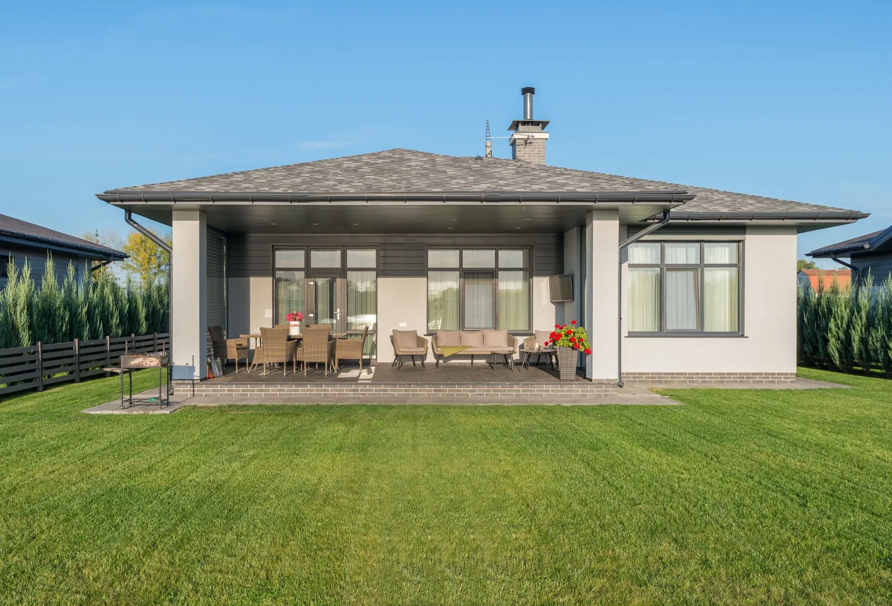

A Plan for Your Yard
We look at the space, shade, drainage, and how you want to use the deck.
At Big Easy Lawn Care, we are deck builders in New Orleans, handling outdoor deck installation for homes and businesses across the area. Each deck is planned around our heat, humidity, and heavy Gulf rains, from the layout and material to drainage and airflow, so it holds up season after season.
Our deck installation in New Orleans includes a free on-site consultation and a plan built around the local climate and your yard. As your deck builders, we settle the layout and material with you, build the deck with drainage and airflow in mind, and finish with a walkthrough of the completed work.
We look at the space, shade, drainage, and how you want to use the deck.
Every deck is planned around local heat, humidity, and heavy rain, so water drains away from the boards.
We talk through wood and composite options and how each one handles a humid Gulf climate.
Every job goes to a fully insured professional who sees it through to the finish.
We walk the finished deck with you, so every board, rail, and step is checked together.
Manage your project from your phone or browser, pay online, and reserve more services anytime.
We offer deck installation in New Orleans four ways: a new deck built for how you use the yard, a deck paired with one of our pergolas for shade, residential decks for homes of any size, and decks for businesses and commercial properties. Each one starts with a free, no-obligation estimate.

A new deck laid out around the space you have, the sun and shade it gets, and how you plan to use it.

Pair the deck with a pergola overhead for shade and airflow through long, hot summers.

Back decks and outdoor sitting areas for homeowners, from tight shaded lots to wide open yards.

Businesses and commercial properties that want an outdoor space guests and tenants can use.
Deck building works differently in New Orleans because rain, wet ground, and Formosan termites all go after outdoor wood. Humid air alone will not rot a deck, but boards soaked by storms or touching damp soil can stay wet long enough to decay, so drainage, airflow, and material choice matter more here.

The best deck material for New Orleans humidity is one that resists decay and termites when it gets wet. LSU AgCenter recommends pressure-treated wood for decks; cedar heartwood rates as decay resistant; cypress varies between old and young growth; and composite boards still need drainage to perform.
Ground contact
Copper-based treatments such as ACQ and copper azole are stable outdoors and in ground contact, and LSU AgCenter says they should be used for decks.
Resistant heartwood
Cedar heartwood rates as decay resistant, though the USDA notes resistance can be lower in ground contact or in warm, humid climates.
Varies by growth
Old-growth baldcypress heartwood is decay resistant, while young-growth baldcypress heartwood rates only moderately resistant.
Wood and plastic
Boards blend wood particles with plastic. Field tests found they can still absorb water and decay when they stay wet in a hot, humid site.
Material notes follow LSU AgCenter and USDA Forest Products Laboratory guidance. We walk through the options with you during the free consultation.
Our New Orleans deck installation service works in three steps. We visit the property and give you a free, no-obligation quote; a fully insured professional builds the deck around the plan we set together; and we finish with a final walkthrough, with payments and scheduling handled from your phone or web browser.
We look at the space, shade, drainage, and access, talk through how you want to use the deck, then give you a clear quote.
Your deck is built to the agreed layout and material, with water directed away from the boards and the framing.
We walk the finished deck with you, then you manage payments and any added services online.

A deck in New Orleans needs some care every season, because rain and humidity never fully leave. Inspect it in spring, keep water draining through summer storms, sweep wet leaves off in fall, and fix soft boards in winter. LSU AgCenter notes that decay fungi cannot grow once wood moisture drops below 20 percent.
Clear debris and check boards, rails, and steps.
Storms soak the boards, so keep the gaps clear and water draining away.
Wet leaf piles hold moisture against the wood, so sweep them off.
A quieter time to replace a soft board or plan an addition.

Cost depends on the size and height of the deck, the material, and the site. We quote after a free, no-obligation look at the property.
Get Free EstimatesBefore building a deck in New Orleans, settle three things: how you will use it and how much shade it needs, which material fits your budget and upkeep, and what the city requires for your lot. Sorting those out first makes the quote accurate and keeps the project moving once work starts.
Think about dining, seating, and shade, and whether a pergola or other outdoor living features belong with it.
Weigh treated wood, cedar, cypress, and composite against your budget and how much upkeep you want.
Check permit and historic district rules with the City of New Orleans, and note where rain stands in the yard.
Our customers mention the same things again and again: prompt, courteous crews, detailed cuts with a thorough cleanup afterward, fair pricing, and fast replies, including a callback within 24 hours on an overgrown lawn. Here is what a few of them shared with us.
The lawn care service I received from start to finish was great. The staff are always prompt and courteous, the prices can't be beat and my yard looks amazing, all thanks to Big Easy Lawn Care!
Big Easy Lawn Care is great! I called them up to take care of an overgrown lawn, and they were able to get back with me within 24 hours. Their pricing was very reasonable as well. We'll be using this company from now on for our lawn care needs.
The guys at Big Easy Lawn Care did an excellent job. They did a very detailed cut and cleaned up thoroughly after. I am so happy with the results! My lawn looks better than ever before, thanks to them!
A deck in New Orleans pairs naturally with the rest of our outdoor living and landscape work: a pergola for shade overhead, pressure washing, hardscape, landscaping around the edges, and landscape building. Each one starts with a free, no-obligation estimate, so you can plan them together.
The cost to build a deck in New Orleans depends on its size and height, the material, and the site, including shade, drainage, and access. The most accurate number comes from a free on-site estimate, which we provide with no obligation.
Whether a deck needs a permit in New Orleans depends on its size and design. The city exempts uncovered residential decks up to 200 square feet and 30 inches above grade at any point, not attached to the home and not serving as an exit door. Historic district rules can still apply, so check with the city first.
How long a deck build takes in New Orleans depends on the size and height of the deck, the material, the site, and how much rain falls during the build. Any permit or historic district review can also add time before work starts. Our free estimate sets out a clear scope before we begin.
How long a wood deck lasts depends mostly on how wet it stays. LSU AgCenter notes that decay fungi grow only when wood moisture is above 20 percent, and Formosan termites are drawn to wet wood. Treated lumber, good airflow, no wood-to-soil contact, and regular cleaning all help a New Orleans deck last.
A composite deck uses boards made from wood particles blended with plastic, in place of solid lumber. The boards are not immune to the weather: USDA Forest Products Laboratory field tests found composite decking samples absorbed water and decayed, fastest at a sunny test site. Drainage and airflow under the boards still matter in New Orleans.
A deck builder plans and builds outdoor decks, from choosing the material and layout to setting the framing, boards, railings, and steps. In New Orleans, a good deck builder also plans for rain, humidity, termites, and drainage, and reminds you to check city permit rules before any work begins.
A ground level deck sits just above the yard, so moisture is the main concern. LSU AgCenter says copper-based pressure-treated wood can be used in ground contact and should be used for decks. The site should also drain well, so rain does not pool under the boards, with room left for air to move beneath.
A floating deck is a freestanding deck that is not attached to the house, usually built low on footings or blocks. In New Orleans, the city exempts some small, low, unattached and uncovered decks from a building permit, but historic district rules can still apply, so check with the city before you start.
Join our satisfied and happy customers. Get your free lawn care assessment today.